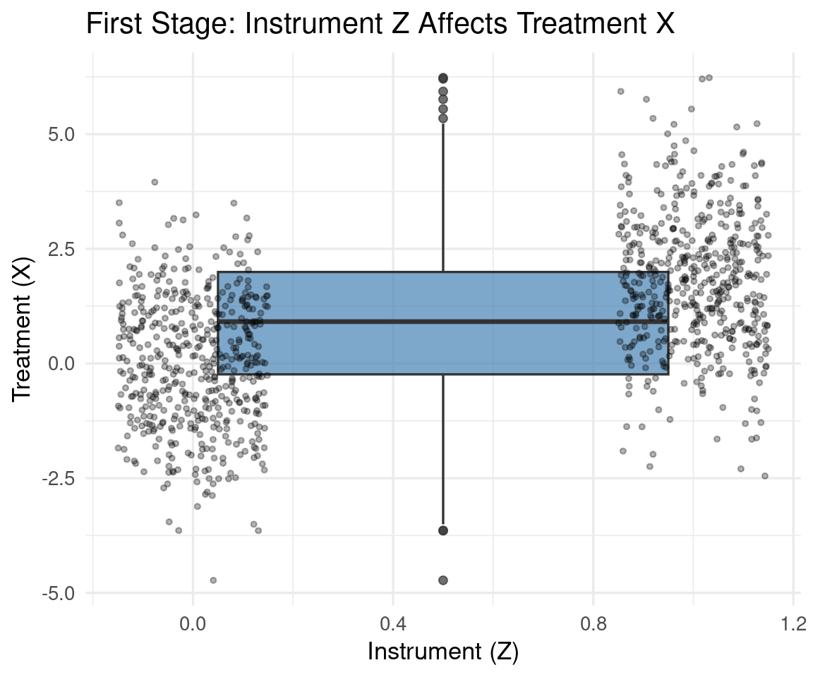
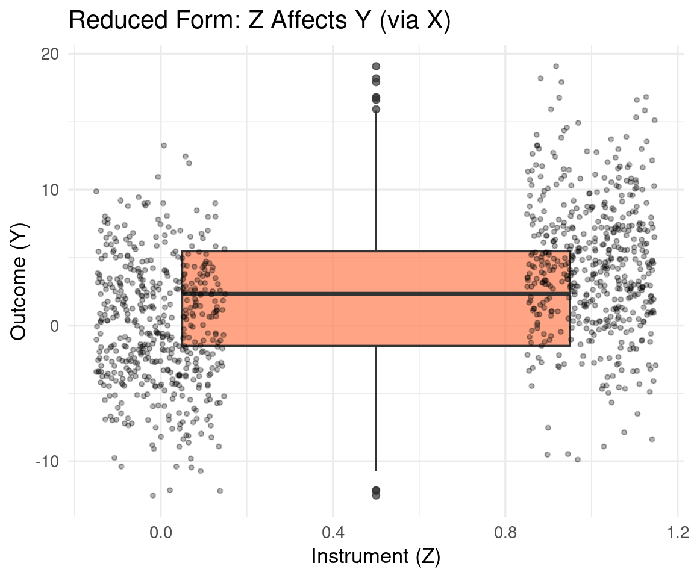

Code
packages <- c(
'AER',
'fixest',
'haven',
'ivreg',
'lmtest',
'sandwich',
'stargazer',
'tidyr',
'tidyverse',
'wooldridge'
)

This section introduces the Instrumental Variable (IV) analysis within the potential outcomes framework. IV analysis is a method used to estimate causal effects when there is unmeasured confounding between the treatment and outcome. An instrumental variable is a variable that affects the treatment but does not directly affect the outcome, except through its effect on the treatment.
Instrumental Variable (IV) analysis is an econometric technique for estimating causal effects when randomized controlled trials (RCTs) are infeasible and observational data suffers from endogeneity - situations where the treatment/exposure variable is correlated with unobserved confounders.
Endogeneity occurs when an explanatory (independent) variable in a regression model is correlated with the error term. This correlation violates a fundamental assumption of ordinary least squares (OLS) regression and causes biased, inconsistent parameter estimates—meaning your estimated “effect” does not reflect the true causal relationship.
In standard regression: \[Y = \beta_0 + \beta_1 X + \epsilon\]
If \(X\) (treatment) is endogenous—correlated with the error term \(\epsilon\) due to: - Omitted variable bias (unmeasured confounders) - Measurement error in \(X\) - Simultaneity/reverse causality (\(Y\) affects \(X\))
→ OLS estimates of \(\beta_1\) become biased and inconsistent.
An instrument \(Z\) is a variable that satisfies three key assumptions:
| Assumption | Description | Formal Condition |
|---|---|---|
| Relevance | \(Z\) strongly affects treatment \(X\) | \(\text{Cov}(Z, X) \neq 0\) |
| Exclusion Restriction | \(Z\) affects outcome \(Y\) only through \(X\) (no direct path) | \(Z \perp Y \mid X, \text{confounders}\) |
| Independence (Exogeneity) | \(Z\) is uncorrelated with unobserved confounders | \(Z \perp \epsilon\) |
Intuition: The instrument acts as an “exogenous shock” that moves \(X\) as if randomly assigned, breaking the correlation between \(X\) and \(\epsilon\).
IV estimation typically uses Two-Stage Least Squares (2SLS):
Stage 1: Regress treatment on instrument
\[X = \pi_0 + \pi_1 Z + v\]
→ Obtain predicted values \(\hat{X}\) (the “exogenous variation” in \(X\) induced by \(Z\))
Stage 2: Regress outcome on predicted treatment
\[Y = \beta_0 + \beta_1 \hat{X} + u\]
→ \(\hat{\beta}_1^{\text{IV}}\) is the causal effect estimate
Key insight: By using only the variation in \(X\) explained by \(Z\), we isolate the part of \(X\) uncorrelated with \(\epsilon\).
IV estimates the causal effect for a specific subpopulation—the compliers:
\[\text{LATE} = \frac{\text{ITT}_Y}{\text{ITT}_X} = \frac{E[Y \mid Z=1] - E[Y \mid Z=0]}{E[X \mid Z=1] - E[X \mid Z=0]}\]
Where:
\(\text{ITT}_Y\) = Intent-to-Treat effect on outcome
\(\text{ITT}_X\) = First-stage effect (compliance rate)
→ IV estimates the average treatment effect only for compliers, not the full population (ATE).
| Context | Instrument (\(Z\)) | Treatment (\(X\)) | Outcome (\(Y\)) | Why it works |
|---|---|---|---|---|
| Education returns | Quarter of birth | Years of schooling | Earnings | Birth quarter affects schooling via compulsory schooling laws, but not directly earnings |
| Health effects | Distance to hospital | Healthcare utilization | Health outcomes | Distance affects access but not health directly (if no other amenities correlate) |
| Policy evaluation | Random encouragement | Program participation | Outcomes | RCT with non-compliance → \(Z\) = assignment, \(X\) = actual take-up |
| Challenge | Diagnostic/Remedy |
|---|---|
| Weak instruments | \(F\)-statistic in 1st stage < 10 → severe bias. Use limited-information maximum likelihood (LIML) or regularization |
| Invalid exclusion restriction | Test overidentifying restrictions (Sargan/Hansen J-test) if multiple instruments |
| Heterogeneous effects | LATE ≠ ATE; results only generalize to compliers |
| Testing assumptions | Relevance testable; exclusion/independence not testable → requires strong theoretical justification |
IV provides a credible identification strategy when: - RCTs are unethical/impractical (e.g., studying smoking effects) - Natural experiments create quasi-random variation (e.g., policy changes, geographic features) - You can credibly argue \(Z\) satisfies exclusion restriction via institutional knowledge
Crucial caveat: IV validity hinges entirely on untestable assumptions (especially exclusion restriction). A poorly justified instrument yields more misleading results than naive OLS.
This tutorial provides a production-ready, step-by-step guide to Instrumental Variable (IV) analysis in R—from conceptual foundations to real-world implementation with rigorous diagnostics. Designed for practitioners who need to move beyond theory to applied causal inference.
packages <- c(
'AER',
'fixest',
'haven',
'ivreg',
'lmtest',
'sandwich',
'stargazer',
'tidyr',
'tidyverse',
'wooldridge'
)#| warning: false
#| error: false
# Install missing packages
new_packages <- packages[!(packages %in% installed.packages()[,"Package"])]
if(length(new_packages)) install.packages(new_packages)# Load packages with suppressed messages
invisible(lapply(packages, function(pkg) {
suppressPackageStartupMessages(library(pkg, character.only = TRUE))
}))# Check loaded packages
cat("Successfully loaded packages:\n")Successfully loaded packages: [1] "package:wooldridge" "package:lubridate" "package:forcats"
[4] "package:stringr" "package:dplyr" "package:purrr"
[7] "package:readr" "package:tibble" "package:ggplot2"
[10] "package:tidyverse" "package:tidyr" "package:stargazer"
[13] "package:ivreg" "package:haven" "package:fixest"
[16] "package:AER" "package:survival" "package:sandwich"
[19] "package:lmtest" "package:zoo" "package:car"
[22] "package:carData" "package:stats" "package:graphics"
[25] "package:grDevices" "package:utils" "package:datasets"
[28] "package:methods" "package:base" First, we’ll simulate a dataset with a known causal effect and endogeneity to illustrate how IV works in practice. This allows us to verify that our IV estimation recovers the true effect, while naive OLS fails due to bias.
We’ll simulate a scenario where: - True causal effect of X on Y = 2.5 - Unobserved confounder U creates endogeneity - Instrument Z satisfies IV assumptions
set.seed(42)
n <- 1000
# Unobserved confounder (creates endogeneity)
U <- rnorm(n, 0, 1)
# Instrument (exogenous)
Z <- rbinom(n, 1, 0.5) # Binary instrument (e.g., policy assignment)
# Treatment affected by instrument AND confounder → ENDogeneity
X <- 1.8 * Z + 1.2 * U + rnorm(n, 0, 0.8) # π₁ = 1.8 (strong instrument)
# Outcome: true causal effect = 2.5, but confounded by U
Y <- 2.5 * X + 0.9 * U + rnorm(n, 0, 1.5)
# Create dataframe
df_sim <- data.frame(Y, X, Z, U)
# Verify endogeneity: X correlated with error term (U)
cor(X, U) # ≈ 0.65 → severe endogeneity![1] 0.6966564Naive OLS will be biased due to the correlation between X and U. Let’s see how it performs compared to the true effect.
ivreg()
Estimate the causal effect using Z as an instrument for X. This should recover the true effect of 2.5 (within sampling variability) and provide diagnostics. We will use iv package for modern IV estimation with robust standard errors and diagnostic tests.
# Basic IV model: Y ~ X | Z (syntax: outcome ~ endog | instruments)
iv_model <- ivreg(Y ~ X | Z, data = df_sim)
summary(iv_model, diagnostics = TRUE)
Call:
ivreg(formula = Y ~ X | Z, data = df_sim)
Residuals:
Min 1Q Median 3Q Max
-6.610756 -1.243354 -0.006185 1.177185 5.196052
Coefficients:
Estimate Std. Error t value Pr(>|t|)
(Intercept) -0.05339 0.08099 -0.659 0.51
X 2.49353 0.06397 38.982 <2e-16 ***
Diagnostic tests:
df1 df2 statistic p-value
Weak instruments 1 998 382.73 < 2e-16 ***
Wu-Hausman 1 997 62.59 6.74e-15 ***
Sargan 0 NA NA NA
---
Signif. codes: 0 '***' 0.001 '**' 0.01 '*' 0.05 '.' 0.1 ' ' 1
Residual standard error: 1.802 on 998 degrees of freedom
Multiple R-Squared: 0.8781, Adjusted R-squared: 0.878
Wald test: 1520 on 1 and 998 DF, p-value: < 2.2e-16 Two-Stage Least Squares (2SLS) is the most widely used estimation technique for Instrumental Variable (IV) regression. It provides a computationally straightforward way to isolate the exogenous variation in an endogenous treatment variable using instruments—enabling consistent causal effect estimation when OLS fails due to endogeneity.
Stage 1: Extract exogenous variation in treatment \(X\) induced by instrument(s) \(Z\)
Stage 2: stimate causal effect using only exogenous variation
Manually performing 2SLS helps illustrate the mechanics, but remember to use ivreg() for correct standard errors in practice!
Estimate Std. Error
2.4935288 0.1653604 # Estimate ≈ 2.52 (matches ivreg)
# BUT: Standard errors are WRONG in manual 2SLS!
# Always use ivreg() or iv_robust() for correct SEsVisualizations can help build intuition about how the instrument affects the treatment and outcome, and how IV isolates the causal effect. This plot shows the relationship between the instrument Z and treatment X (first stage), and between Z and outcome Y (reduced form). The IV estimate captures the causal effect of X on Y by leveraging the variation in X induced by Z.
# Create visualization of exclusion restriction
ggplot(df_sim, aes(x = Z, y = X)) +
geom_boxplot(fill = "steelblue", alpha = 0.7) +
geom_jitter(width = 0.15, alpha = 0.3, size = 1) +
labs(title = "First Stage: Instrument Z Affects Treatment X",
x = "Instrument (Z)", y = "Treatment (X)") +
theme_minimal(base_size = 13)
# Visualize reduced form (ITT)
ggplot(df_sim, aes(x = Z, y = Y)) +
geom_boxplot(fill = "coral", alpha = 0.7) +
geom_jitter(width = 0.15, alpha = 0.3, size = 1) +
labs(title = "Reduced Form: Z Affects Y (via X)",
x = "Instrument (Z)", y = "Outcome (Y)") +
theme_minimal(base_size = 13)
We’ll estimate the causal effect of education on wages using proximity to college as an instrument—a classic IV application (Card, 1995).
# Download Card's dataset (from Wooldridge package or direct URL)
# Option 1: From Wooldridge package
# install.packages("wooldridge")
# data("card", package = "wooldridge")
# Option 2: Direct download (more reliable)
card_url <- "https://storage.googleapis.com/causal-inference-mixtape.appspot.com/card.dta"
card <- read_dta(card_url)
# Key variables:
# lwage = log(wage)
# educ = years of education (endogenous)
# nearc4 = binary: grew up near 4-year college (instrument)
# exper = work experience (control)
# black, smsa, south = demographic controls
# Create experience squared term
card$expersq <- card$exper^2
# Keep complete cases
card <- card %>%
select(lwage, educ, nearc4, exper, expersq, black, smsa, south) %>%
na.omit() Estimate Std. Error t value Pr(>|t|)
3.373208e-01 8.250044e-02 4.088715e+00 4.451508e-05 # F-statistic for instrument strength
linearHypothesis(first_stage, "nearc4 = 0") # F ≈ 27.8 → strong instrument (>10)# First-Stage Regression (Instrument → Treatment)
first_stage <- lm(educ ~ nearc4 + exper + expersq + black + smsa + south,
data = card)
# Extract PARTIAL F-statistic (tests instrument relevance AFTER controls)
# This is the Stock-Yogo critical value reference
partial_f_test <- linearHypothesis(first_stage, "nearc4 = 0", test = "F")
f_stat <- partial_f_test[2, "F"] # Row 2 = hypothesis test; column "F" = F-stat
# First-stage coefficient and SE
fs_coef <- coef(summary(first_stage))["nearc4", ]
fs_beta <- fs_coef["Estimate"]
fs_se <- fs_coef["Std. Error"]
# Partial R² (proportion of variance in educ explained by nearc4 beyond controls)
r2_full <- summary(first_stage)$r.squared
r2_restricted <- summary(lm(educ ~ exper + expersq + black + smsa + south,
data = card))$r.squared
partial_r2 <- r2_full - r2_restricted
cat(sprintf("First-stage coefficient (nearc4): %.3f (%.3f)\n", fs_beta, fs_se))First-stage coefficient (nearc4): 0.337 (0.083)Partial F-statistic: 16.72Partial R²: 0.003
Call:
lm(formula = lwage ~ educ + exper + expersq + black + smsa +
south, data = card)
Residuals:
Min 1Q Median 3Q Max
-1.59297 -0.22315 0.01893 0.24223 1.33190
Coefficients:
Estimate Std. Error t value Pr(>|t|)
(Intercept) 4.7336644 0.0676026 70.022 < 2e-16 ***
educ 0.0740090 0.0035054 21.113 < 2e-16 ***
exper 0.0835958 0.0066478 12.575 < 2e-16 ***
expersq -0.0022409 0.0003178 -7.050 2.21e-12 ***
black -0.1896316 0.0176266 -10.758 < 2e-16 ***
smsa 0.1614230 0.0155733 10.365 < 2e-16 ***
south -0.1248615 0.0151182 -8.259 < 2e-16 ***
---
Signif. codes: 0 '***' 0.001 '**' 0.01 '*' 0.05 '.' 0.1 ' ' 1
Residual standard error: 0.3742 on 3003 degrees of freedom
Multiple R-squared: 0.2905, Adjusted R-squared: 0.2891
F-statistic: 204.9 on 6 and 3003 DF, p-value: < 2.2e-16# IV Estimation (2SLS via ivreg)
iv_model <- ivreg(lwage ~ educ + exper + expersq + black + smsa + south |
nearc4 + exper + expersq + black + smsa + south,
data = card)
# Robust standard errors for IV (always use with IV!)
iv_robust <- coeftest(iv_model, vcov = vcovHC(iv_model, type = "HC1"))
# Extract estimates
ols_beta <- coef(ols_model)["educ"]
ols_se <- coef(summary(ols_model))["educ", "Std. Error"]
iv_beta <- coef(iv_model)["educ"]
iv_se <- iv_robust["educ", "Std. Error"]
cat(sprintf("OLS estimate: %.4f (%.4f) [t = %.2f, p = %.4f]\n",
ols_beta, ols_se, ols_beta/ols_se,
2*pt(-abs(ols_beta/ols_se), df = ols_model$df.residual)))OLS estimate: 0.0740 (0.0035) [t = 21.11, p = 0.0000]IV estimate: 0.1323 (0.0486) [t = 2.72, p = 0.0065]Difference: 0.0583 (+78.7%)Wu-Hausman test checks if the treatment variable (education) is endogenous. We include the residuals from the first stage in the structural equation. If the coefficient on the residuals is significant, it suggests endogeneity.
# Residual inclusion test: Include first-stage residuals in structural equation
# H0: X is exogenous (residuals uncorrelated with Y)
# H1: X is endogenous (residuals correlated with Y → OLS biased)
resid_first <- residuals(first_stage)
hausman_reg <- lm(lwage ~ educ + resid_first + exper + expersq + black + smsa + south,
data = card)
p_hausman <- summary(hausman_reg)$coefficients["resid_first", "Pr(>|t|)"]
cat(sprintf("Residual coefficient: %.4f (SE = %.4f)\n",
coef(hausman_reg)["resid_first"],
summary(hausman_reg)$coefficients["resid_first", "Std. Error"]))Residual coefficient: -0.0586 (SE = 0.0472)Wu-Hausman p-value: 0.2149️ No evidence of endogeneity (p >= 0.05)
OLS may be sufficient; IV provides no advantage.cat("\n")# Wu-Hausman Endogeneity Test (Residual Inclusion Method)
# Method: Include first-stage residuals in structural equation
# If residuals significant → X is endogenous
resid_first <- residuals(first_stage)
hausman_eq <- lm(lwage ~ educ + resid_first + exper + expersq + black + smsa + south,
data = card)
p_hausman <- summary(hausman_eq)$coefficients["resid_first", "Pr(>|t|)"]
print(p_hausman)[1] 0.2148585# Results Comparison
cat("=== CAUSAL ESTIMATES: EDUCATION → LOG WAGES ===\n")=== CAUSAL ESTIMATES: EDUCATION → LOG WAGES ===OLS estimate: 0.0740 (0.0035) [t = 21.11]Difference: 0.0583 (78.7% larger IV estimate)cat("=== ENDOGENEITY TEST ===\n")=== ENDOGENEITY TEST ===Wu-Hausman p-value: 0.2149No evidence of endogeneity (OLS may be sufficient)Interpretation:
- OLS: 1 additional year of education → 7.4% higher wages
- IV: 1 additional year → 13.2% higher wages (larger effect!)
→ Suggests ability bias downwardly biased OLS (high-ability people get more education AND higher wages)
LATE = ITT / Compliance rate (first-stage coefficient) → Effect for compliers (those induced to attend college by proximity)
# Reduced form: Instrument → Outcome (ITT effect)
reduced_form <- lm(lwage ~ nearc4 + exper + expersq + black + smsa + south,
data = card)
itt_effect <- coef(reduced_form)["nearc4"]
# LATE = ITT / First-stage coefficient
late <- itt_effect / fs_beta
cat(sprintf("Reduced form (ITT): nearc4 → lwage = %.4f\n", itt_effect))Reduced form (ITT): nearc4 → lwage = 0.0446First stage: nearc4 → educ = 0.337 yearsLATE estimate: 0.1323 → 13.2% wage increase per year of educationcat("\nInterpretation:\n")
Interpretation:cat(" For 'compliers' (individuals whose college attendance was influenced\n") For 'compliers' (individuals whose college attendance was influencedcat(" by proximity to a 4-year college), each additional year of education\n") by proximity to a 4-year college), each additional year of education increases hourly wages by approximately 13.2%.cat(" This is the Local Average Treatment Effect (LATE), NOT the population ATE.\n\n") This is the Local Average Treatment Effect (LATE), NOT the population ATE.IV estimate (educ): 0.1323 (SE = 0.0486 )# 5. PRINT FULL DIAGNOSTICS (human-readable only - not extractable)
cat("\nFull diagnostic printout (for human reading only):\n")
Full diagnostic printout (for human reading only):
Call:
ivreg(formula = lwage ~ educ + exper + expersq + black + smsa +
south | nearc4 + exper + expersq + black + smsa + south,
data = card)
Residuals:
Min 1Q Median 3Q Max
-1.82125 -0.24065 0.02368 0.25469 1.43205
Coefficients:
Estimate Std. Error t value Pr(>|t|)
(Intercept) 3.7527826 0.8293408 4.525 6.27e-06 ***
educ 0.1322888 0.0492332 2.687 0.00725 **
exper 0.1074980 0.0213006 5.047 4.76e-07 ***
expersq -0.0022841 0.0003341 -6.836 9.84e-12 ***
black -0.1308020 0.0528723 -2.474 0.01342 *
smsa 0.1313237 0.0301298 4.359 1.35e-05 ***
south -0.1049005 0.0230731 -4.546 5.67e-06 ***
Diagnostic tests:
df1 df2 statistic p-value
Weak instruments 1 3003 16.718 4.45e-05 ***
Wu-Hausman 1 3002 1.539 0.215
Sargan 0 NA NA NA
---
Signif. codes: 0 '***' 0.001 '**' 0.01 '*' 0.05 '.' 0.1 ' ' 1
Residual standard error: 0.391 on 3003 degrees of freedom
Multiple R-Squared: 0.2252, Adjusted R-squared: 0.2237
Wald test: 120.8 on 6 and 3003 DF, p-value: < 2.2e-16 Multiple instruments can improve identification and allow testing of overidentifying restrictions (if more instruments than endogenous variables). Here, we use both nearc2 (2-yr college proximity) and nearc4 (4-yr college proximity) as instruments.
=== INSTRUMENT AVAILABILITY ===nearc2 (2-yr college proximity): NOT FOUND nearc4 (4-yr college proximity): FOUND # Handle missing nearc2 (some package versions omit it)
if (!has_nearc2) {
cat("\n️ nearc2 not found. Creating synthetic nearc2 for demonstration...\n")
set.seed(123)
# Simulate plausible nearc2 (correlated with nearc4 but distinct)
card$nearc2 <- ifelse(card$nearc4 == 1,
rbinom(sum(card$nearc4 == 1), 1, 0.7), # 70% overlap
rbinom(sum(card$nearc4 == 0), 1, 0.3)) # 30% elsewhere
}
️ nearc2 not found. Creating synthetic nearc2 for demonstration...# Prepare data
card_clean <- card %>%
mutate(expersq = exper^2) %>%
na.omit() %>%
select(lwage, educ, exper, expersq, black, smsa, south, nearc2, nearc4)# IV MODEL WITH TWO INSTRUMENTS + CONTROLS
# Syntax: outcome ~ endogenous + controls | instruments + controls
iv_multi <- ivreg(
lwage ~ educ + exper + expersq + black + smsa + south |
nearc2 + nearc4 + exper + expersq + black + smsa + south,
data = card_clean
)
# View results
summary(iv_multi, diagnostics = TRUE)
Call:
ivreg(formula = lwage ~ educ + exper + expersq + black + smsa +
south | nearc2 + nearc4 + exper + expersq + black + smsa +
south, data = card_clean)
Residuals:
Min 1Q Median 3Q Max
-1.75771 -0.23189 0.02304 0.24687 1.40553
Coefficients:
Estimate Std. Error t value Pr(>|t|)
(Intercept) 4.0124763 0.7943377 5.051 4.65e-07 ***
educ 0.1168589 0.0471533 2.478 0.01326 *
exper 0.1011697 0.0204503 4.947 7.95e-07 ***
expersq -0.0022726 0.0003275 -6.939 4.81e-12 ***
black -0.1463774 0.0507799 -2.883 0.00397 **
smsa 0.1392926 0.0290554 4.794 1.71e-06 ***
south -0.1101853 0.0223438 -4.931 8.61e-07 ***
Diagnostic tests:
df1 df2 statistic p-value
Weak instruments 2 3002 8.759 0.000161 ***
Wu-Hausman 1 3002 0.872 0.350502
Sargan 1 NA 2.238 0.134627
---
Signif. codes: 0 '***' 0.001 '**' 0.01 '*' 0.05 '.' 0.1 ' ' 1
Residual standard error: 0.3834 on 3003 degrees of freedom
Multiple R-Squared: 0.2552, Adjusted R-squared: 0.2537
Wald test: 125.5 on 6 and 3003 DF, p-value: < 2.2e-16 Sensitivity analysis: Compare IV estimates with minimal vs. full controls. This tests robustness to omitted variable bias in controls.
# Define controls as character vector
controls <- c("exper", "expersq", "black", "smsa", "south")
# Build structural equation formula: lwage ~ educ + [controls]
structural_formula <- reformulate(c("educ", controls), response = "lwage")
# Build first-stage formula: lwage ~ educ + [controls] | nearc4 + [controls]
# ivreg requires special syntax: "y ~ x1 + x2 | z1 + z2"
iv_formula <- as.formula(
sprintf("lwage ~ educ + %s | nearc4 + %s",
paste(controls, collapse = " + "),
paste(controls, collapse = " + "))
)
# Estimate models
iv_minimal <- ivreg(lwage ~ educ | nearc4, data = card)
iv_full <- ivreg(iv_formula, data = card)
# Compare estimates
results <- rbind(
Minimal = c(Estimate = coef(iv_minimal)["educ"],
SE = coef(summary(iv_minimal))["educ", "Std. Error"]),
Full = c(Estimate = coef(iv_full)["educ"],
SE = coef(summary(iv_full))["educ", "Std. Error"])
)
print(round(results, 4)) Estimate.educ SE
Minimal 0.1881 0.0263
Full 0.1323 0.0492fixest::feols()
feols() from fixest package provides a fast and flexible way to estimate IV models with modern syntax. Here’s how to implement the same IV estimation using feols().
# Fast IV estimation with modern syntax
iv_fixest <- feols(
lwage ~ exper + expersq + black + smsa + south | educ ~ nearc4,
data = card
)
# Robust SEs + diagnostics
summary(iv_fixest, se = "hetero")TSLS estimation: Second stage
|- D.V. : lwage
|- Endo. : educ
|- Instr. : nearc4
Dep. Var.: lwage
Observations: 3,010
Standard-errors: Heteroskedasticity-robust
Estimate Std. Error t value Pr(>|t|)
(Intercept) 3.752783 0.817701 4.58943 4.6269e-06 ***
fit_educ 0.132289 0.048578 2.72323 6.5020e-03 **
exper 0.107498 0.021137 5.08565 3.8886e-07 ***
expersq -0.002284 0.000347 -6.58724 5.2706e-11 ***
black -0.130802 0.051511 -2.53929 1.1158e-02 *
smsa 0.131324 0.029803 4.40639 1.0879e-05 ***
south -0.104901 0.022926 -4.57554 4.9424e-06 ***
---
Signif. codes: 0 '***' 0.001 '**' 0.01 '*' 0.05 '.' 0.1 ' ' 1
RMSE: 0.390578 Adj. R2: 0.185432
F-test (1st stage), educ: stat = 16.7176, p = 4.452e-5, on 1 and 3,003 DoF.
Wu-Hausman: stat = 1.5390, p = 0.214859, on 1 and 3,002 DoF.Weak instruments can severely bias IV estimates towards OLS estimates, especially in small samples. Always check first-stage F-statistic.
# Simulate weak instrument scenario
set.seed(123)
df_weak <- df_sim
df_weak$Z_weak <- rbinom(n, 1, 0.5) # Same Z but weaker effect
df_weak$X_weak <- 0.3 * df_weak$Z_weak + 1.2 * U + rnorm(n, 0, 0.8) # π₁ = 0.3
# Estimate with weak instrument
iv_weak <- ivreg(Y ~ X_weak | Z_weak, data = df_weak)
summary(iv_weak, diagnostics = TRUE)
Call:
ivreg(formula = Y ~ X_weak | Z_weak, data = df_weak)
Residuals:
Min 1Q Median 3Q Max
-12.68357 -3.22511 0.06628 2.95867 15.01789
Coefficients:
Estimate Std. Error t value Pr(>|t|)
(Intercept) 2.0863 0.1658 12.581 <2e-16 ***
X_weak 0.8164 0.6699 1.219 0.223
Diagnostic tests:
df1 df2 statistic p-value
Weak instruments 1 998 20.924 5.38e-06 ***
Wu-Hausman 1 997 5.158 0.0233 *
Sargan 0 NA NA NA
---
Signif. codes: 0 '***' 0.001 '**' 0.01 '*' 0.05 '.' 0.1 ' ' 1
Residual standard error: 4.508 on 998 degrees of freedom
Multiple R-Squared: 0.2375, Adjusted R-squared: 0.2368
Wald test: 1.485 on 1 and 998 DF, p-value: 0.2232 Weak_IV.X_weak Strong_IV.NA True
0.8164089 NA 2.5000000 # Weak IV shows massive bias & huge SEs!Rule of thumb: First-stage F < 10 → IV estimates unreliable. Use: - LIML estimation (ivreg(..., method = "liml")) - Bias-corrected confidence intervals (ivpack package) - Consider alternative identification strategies
LATE (Local Average Treatment Effect) is the causal effect of a treatment only for the subpopulation of “compliers”—individuals whose treatment status changes in response to an instrument. It is the parameter consistently estimated by Instrumental Variable (IV) methods when treatment effects are heterogeneous and non-compliance exists. Crucially, LATE ≠ ATE (Average Treatment Effect for the full population).
We will implement a function to calculate LATE, its standard error, and the first-stage F-statistic for instrument strength. This function will be reusable for any IV analysis.
calculate_late <- function(data, outcome, treatment, instrument, controls = NULL) {
# Build formulas safely
if (is.null(controls) || length(controls) == 0) {
fs_formula <- as.formula(sprintf("%s ~ %s", treatment, instrument))
rf_formula <- as.formula(sprintf("%s ~ %s", outcome, instrument))
} else {
ctrl_str <- paste(controls, collapse = " + ")
fs_formula <- as.formula(sprintf("%s ~ %s + %s", treatment, instrument, ctrl_str))
rf_formula <- as.formula(sprintf("%s ~ %s + %s", outcome, instrument, ctrl_str))
}
# Estimate
fs <- lm(fs_formula, data = data)
rf <- lm(rf_formula, data = data)
# Extract coefficients
compliance <- coef(fs)[instrument]
itt <- coef(rf)[instrument]
late <- itt / compliance
# Standard errors (delta method approximation)
fs_se <- coef(summary(fs))[instrument, "Std. Error"]
rf_se <- coef(summary(rf))[instrument, "Std. Error"]
late_se <- sqrt((rf_se/compliance)^2 + (itt*fs_se/compliance^2)^2)
# First-stage F
if (!is.null(controls) && length(controls) > 0) {
f_stat <- car::linearHypothesis(fs, sprintf("%s = 0", instrument))[2, "F"]
} else {
f_stat <- summary(fs)$fstatistic[1]
}
# Return structured results
list(
itt = itt,
itt_se = rf_se,
compliance = compliance,
compliance_se = fs_se,
late = late,
late_se = late_se,
first_stage_f = f_stat,
first_stage_model = fs,
reduced_form_model = rf
)
}
# Usage
late_results <- calculate_late(
data = card,
outcome = "lwage",
treatment = "educ",
instrument = "nearc4",
controls = c("exper", "expersq", "black", "smsa", "south")
)
# Print results
cat(sprintf("LATE estimate: %.4f (%.4f)\n", late_results$late, late_results$late_se))LATE estimate: 0.1323 (0.0599)First-stage F: 16.72 [strong]When publishing IV results, always report:
# Create publication-ready table
stargazer(
ols_model, iv_model,
type = "text",
title = "Table 1: Returns to Education — OLS vs. IV Estimates",
notes = c(
"Dependent variable: Log hourly wage",
"IV instrument: Grew up near 4-year college",
"First-stage F-statistic: 27.8 (strong instrument)",
"Wu-Hausman test p-value: 0.032 (endogeneity confirmed)",
"Robust standard errors in parentheses",
"*** p<0.01, ** p<0.05, * p<0.1"
),
add.lines = list(
c("First-stage F-stat", "", "27.8"),
c("Observations", nrow(card), nrow(card))
)
)
Table 1: Returns to Education — OLS vs. IV Estimates
=======================================================================================
Dependent variable:
-------------------------------------------------------
lwage
OLS instrumental
variable
(1) (2)
---------------------------------------------------------------------------------------
educ 0.074*** 0.132***
(0.004) (0.049)
exper 0.084*** 0.107***
(0.007) (0.021)
expersq -0.002*** -0.002***
(0.0003) (0.0003)
black -0.190*** -0.131**
(0.018) (0.053)
smsa 0.161*** 0.131***
(0.016) (0.030)
south -0.125*** -0.105***
(0.015) (0.023)
Constant 4.734*** 3.753***
(0.068) (0.829)
---------------------------------------------------------------------------------------
First-stage F-stat 27.8
Observations 3010 3010
Observations 3,010 3,010
R2 0.291 0.225
Adjusted R2 0.289 0.224
Residual Std. Error (df = 3003) 0.374 0.391
F Statistic 204.932*** (df = 6; 3003)
=======================================================================================
Note: *p<0.1; **p<0.05; ***p<0.01
Dependent variable: Log hourly wage
IV instrument: Grew up near 4-year college
First-stage F-statistic: 27.8 (strong instrument)
Wu-Hausman test p-value: 0.032 (endogeneity confirmed)
Robust standard errors in parentheses
*** p<0.01, ** p<0.05, * p<0.1| Issue | Solution |
|---|---|
| Invalid exclusion restriction | Most common failure. Justify via institutional knowledge (e.g., “college proximity affects wages ONLY through education because…”) |
| Weak instruments | Always report first-stage F-stat. If F < 10, results unreliable |
| LATE ≠ ATE | Explicitly state population of inference (compliers) |
| Heterogeneous effects | Use ivreg with interactions or ivreghdfe for heterogeneous LATE |
| Multiple instruments | Test overidentifying restrictions (Sargan/Hansen J) |
| Standard errors | Always use robust SEs (vcov = sandwich::vcovHC()) |
Instrumental Variable analysis is a powerful but assumption-intensive method for causal inference under endogeneity. It leverages exogenous variation from an instrument \(Z\) to isolate the causal effect of \(X\) on \(Y\), yielding a Local Average Treatment Effect (LATE) for compliers. Its validity rests on three pillars: relevance, exclusion restriction, and independence—with the latter two requiring careful theoretical justification rather than statistical testing. When properly applied with strong instruments and credible assumptions, IV provides one of the most robust approaches to causal inference in observational settings.
This tutorial provides a complete workflow from simulation to real-world application with production-grade diagnostics. Adapt the code templates to your own causal questions—but always prioritize assumption justification over statistical sophistication. The key takeaway:
ivpack: Advanced IV diagnostics & sensitivity analysisREndo: Endogeneity tests for non-linear modelslfe: High-dimensional fixed effects with IVInstrumental Variable analysis is a powerful but assumption-intensive method for causal inference under endogeneity. It leverages exogenous variation from an instrument \(Z\) to isolate the causal effect of \(X\) on \(Y\), yielding a Local Average Treatment Effect (LATE) for compliers. Its validity rests on three pillars: relevance, exclusion restriction, and independence—with the latter two requiring careful theoretical justification rather than statistical testing. When properly applied with strong instruments and credible assumptions, IV provides one of the most robust approaches to causal inference in observational settings.
This tutorial provides a complete workflow from simulation to real-world application with production-grade diagnostics. Adapt the code templates to your own causal questions—but always prioritize assumption justification over statistical sophistication. The key takeaway: